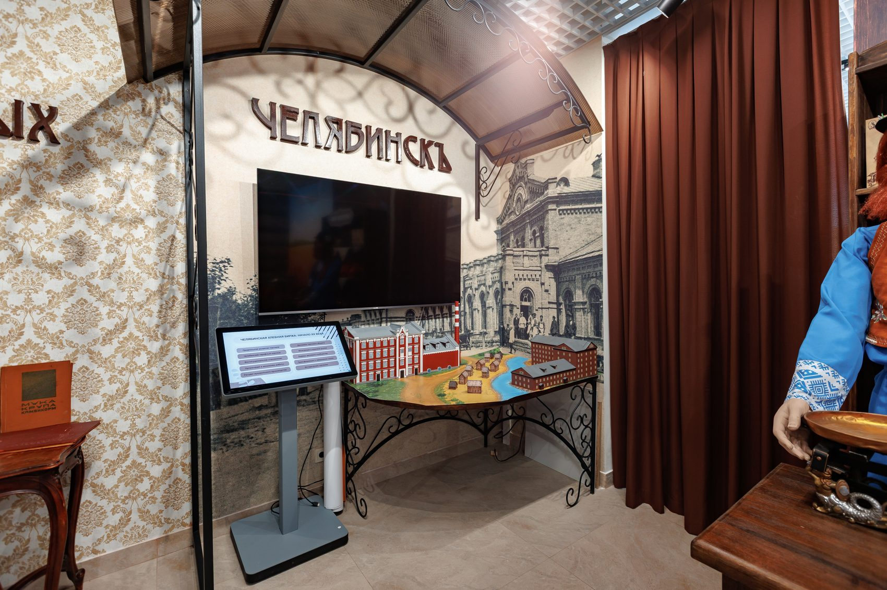
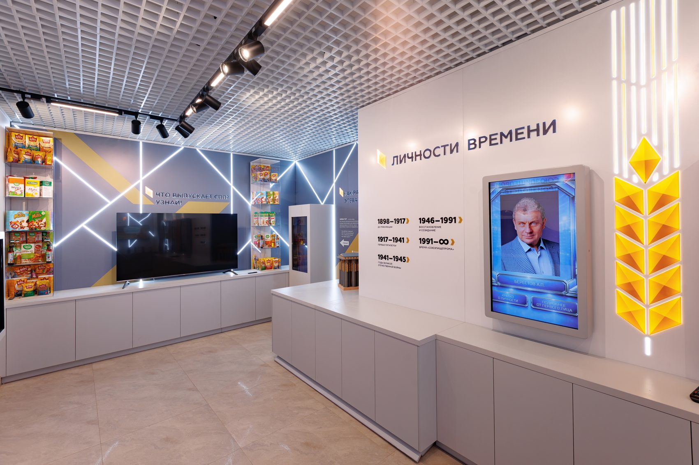
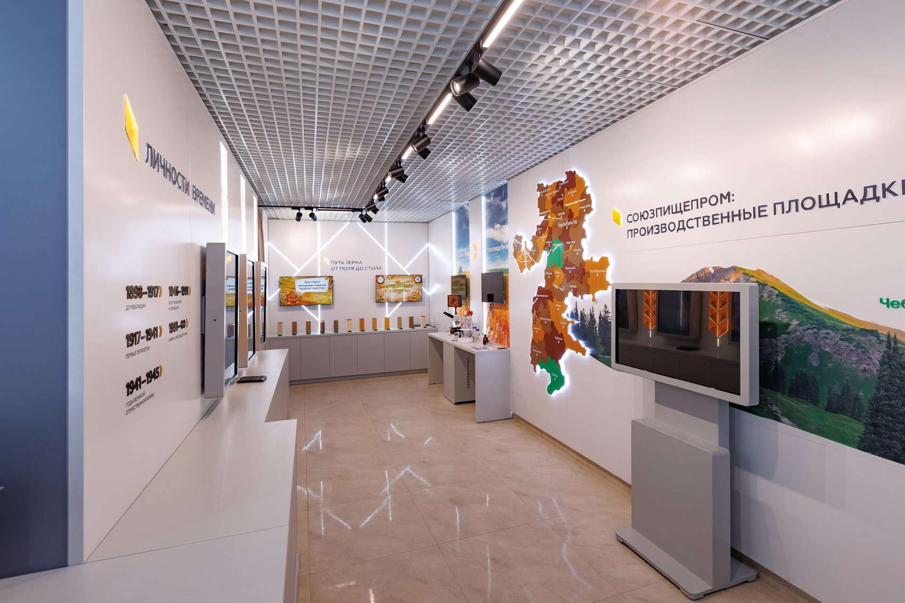
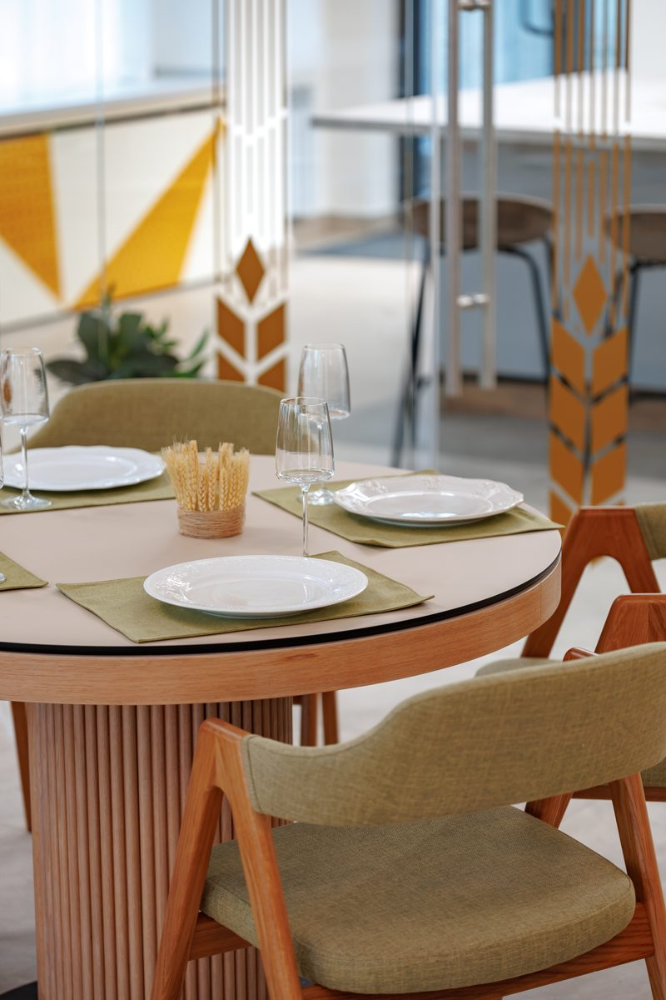
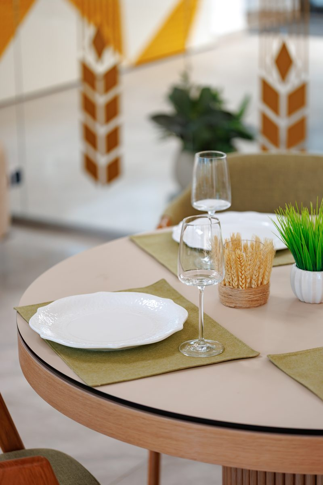
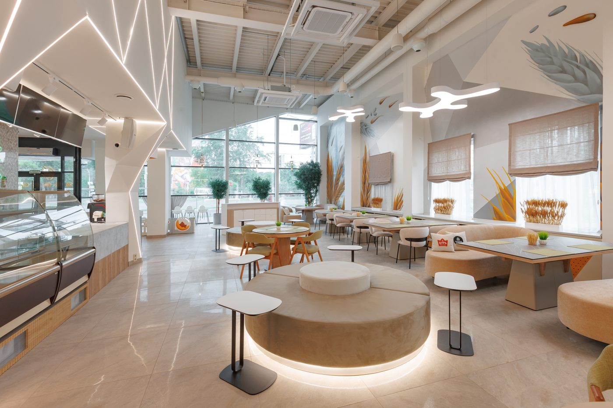
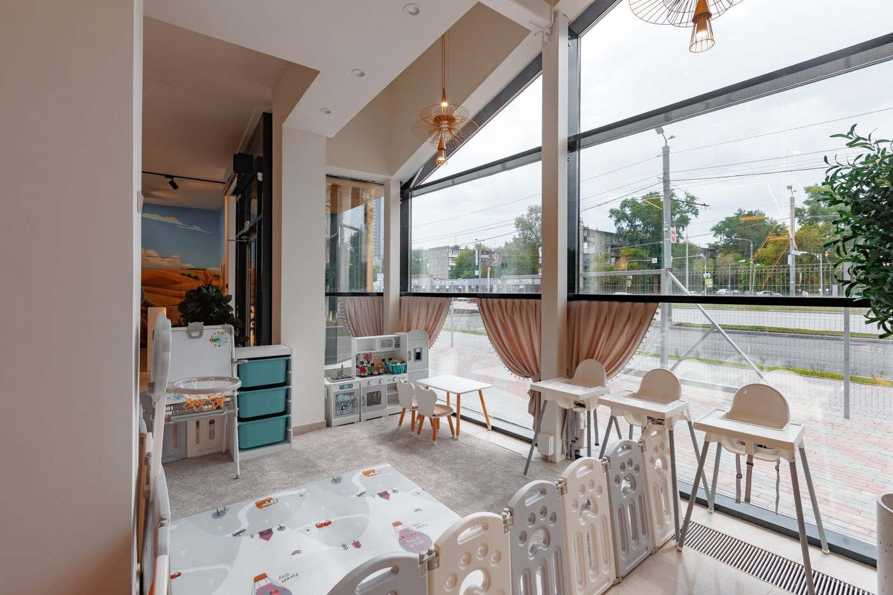
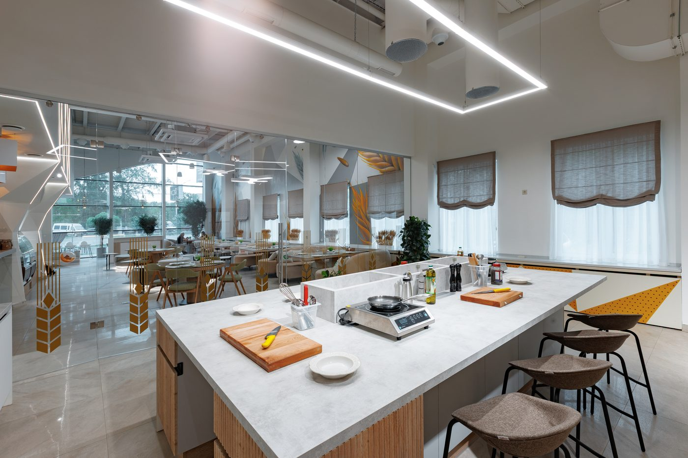
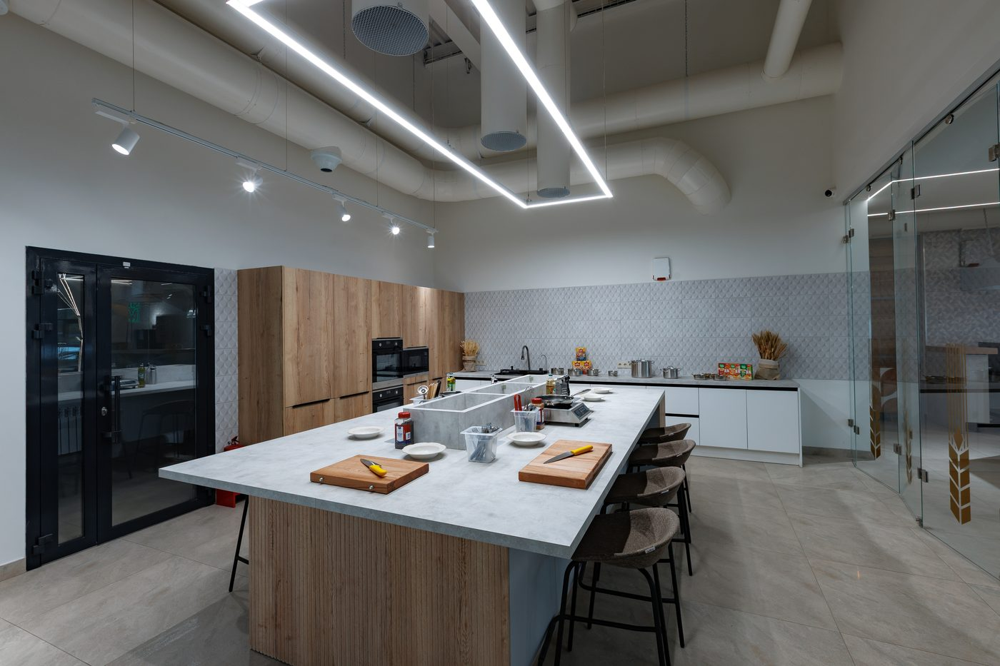
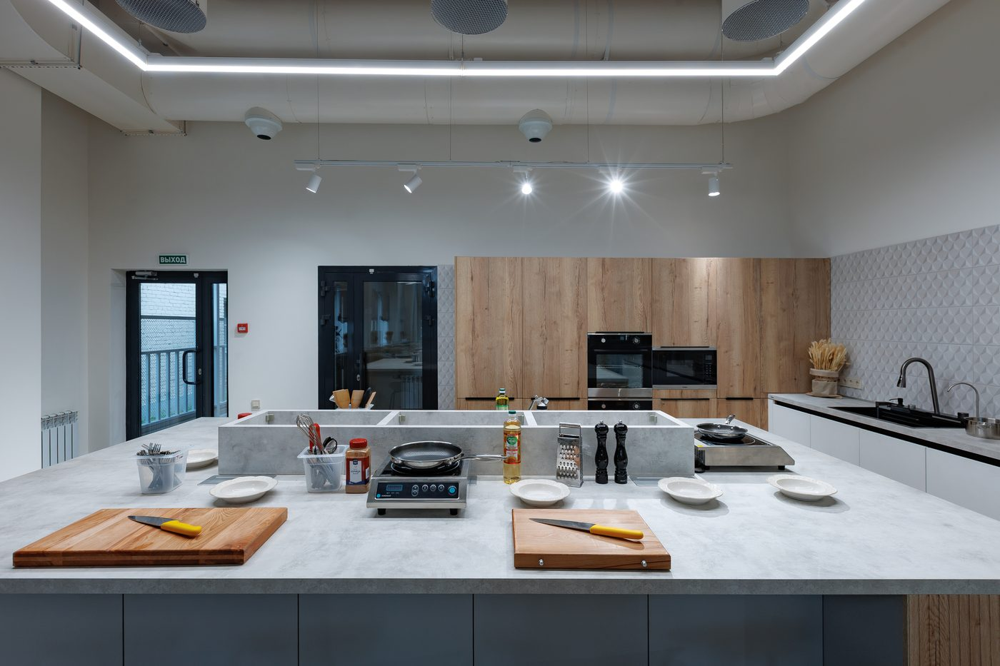

Ресторан
Место, где историю можно увидеть
Истории людей, которые растили зерно на Урале и строили мелькомбинат






Зерно, мука, хлеб — в блюдах, которые готовили на Урале сто лет назад,
и в тех, что придумали вчера.
Ресторан

Открытая кухня

События


Истории людей, которые растили зерно на Урале и строили мелькомбинат



На открытой кухне шеф-повар делится тем, что обычно остаётся за дверями ресторана: рецептами, приёмами и мелочами, из которых складывается вкус



К нам часто приходят по совету — а уходя, советуют сами
Пришли пообедать, а ушли через четыре часа: между горячим и десертом успели обойти весь музей. Теперь знаю про мелькомбинат больше, чем про собственную работу. Хлеб взяли с собой домой.

Светлое, продуманное пространство, колосья в интерьере. Меню построено вокруг зерна, но без занудства: каши, выпечка и вполне современные блюда. Порции честные.

Я челябинец, про мелькомбинат слышал всю жизнь, но только здесь понял, какая за ним история. Музей сделан с уважением к людям, которые его строили. После экскурсии пообедали — правильное завершение.

Муж подарил сертификат на мастер-класс — лучший подарок за годы. Шеф без пафоса: объясняет, шутит, поправляет. Тесто теперь получается и дома.
Возил сюда деловых партнёров из Москвы: удивить их сложно, а здесь получилось. Сначала экскурсия по музею, потом ужин. Уехали с хлебом и впечатлениями.
Отмечали день рождения мамы. Она печёт всю жизнь — на мастер-классе спорила с шефом о тесте, а он слушал и смеялся. Лучший её праздник за долгое время.
Были на мастер-классе вдвоём с сыном-подростком. Впервые видел, чтобы он три часа не смотрел в телефон. Приготовили ужин, съели его тут же — и записались ещё раз.
Водил родителей, им за семьдесят. Мама полмузея вспоминала своё деревенское детство, отец рассказывал про завод. Потом сидели в ресторане и разговаривали так хорошо, как давно не получалось.
Заглянули случайно, по дороге, а оказалось — целый мир: ресторан, музей и кухня, где учат готовить. За один визит всё не успели. Вернёмся за мастер-классом.
Отмечали здесь годовщину свадьбы. Брали блюда по старым уральским рецептам и кое-что из нового меню — вкусно и то, и другое. Вечером в зале очень тёплый свет.
Обедаю здесь по будням, офис рядом. Кухня стабильная, обслуживание быстрое, и приятно, что даже простая каша здесь со смыслом. Привёл коллег — теперь ходим вместе.
Моя бабушка работала на мелькомбинате, и в музее я будто встретилась с её молодостью. Спасибо тем, кто собрал эти истории. Посидели потом в ресторане — уходить не хотелось.
Зашли с женой на час, ушли под закрытие. Пока ждали горячее, посмотрели часть экспозиции — удобно, что всё в одном месте. Кухня достойная, хлеб забрали с собой.
Люблю места, где за красивой картинкой есть содержание. Здесь оно есть: история мелькомбината, уральский хлеб, живая кухня. Ушла с ощущением, что город стал мне понятнее.
Была на мастер-классе на открытой кухне. Боялась, что буду мешаться, но шеф объясняет так, что получилось даже у меня. Дома повторила — не поверили, что готовила сама.
Редкое место, куда можно прийти всей семьёй и никому не скучно. Сын залип на старых механизмах в музее, дочь попросилась готовить с шефом. Обед прошёл без капризов — у нас это событие.
Приезжали из Екатеринбурга специально ради музея — не пожалели. История о том, как на Урале растили хлеб, рассказана через судьбы конкретных людей. Обратно везли свежий хлеб и план вернуться.
Пришла ради красивых фотографий, осталась из-за еды. Интерьер действительно фотогеничный, но хлеб и десерты — главное открытие. В музей заглянула на десять минут, зависла на час.
Скептически отношусь к местам «с концепцией», но тут всё по-настоящему. В музее интересно, в ресторане вкусно, на кухне шеф действительно учит, а не показывает шоу. Редкое сочетание.
С моей фамилией пройти мимо было невозможно. Место оправдало: душевный музей, вкусный обед и очень доброжелательная команда. Приведу подруг.
Мы находимся в историческом центре Челябинска